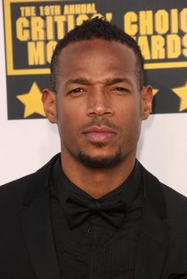
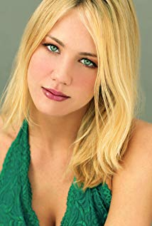
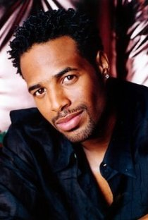
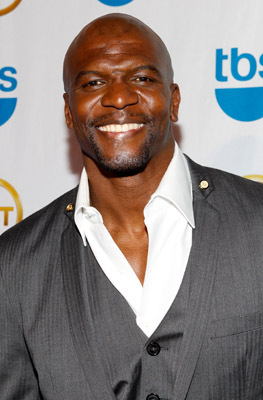

ATIVIDADE PRATICA PUC

As Branquelas
White ChicksAno de lançamento: 2004
Direção: Keenen Ivory Wayans
País de origem: Estados Unidos da América
Gênero(s): Comédia , Policial
Classificação: 12 - Não recomendado para menores de 12 anos
Elenco: Shawn Wayans, Marlon Wayans, Maitland Ward
Sinopse
Os irmãos Marcus (Marlon Wayans) e Kevin Copeland (Shawn Wayans) são detetives do FBI que estão com problemas no trabalho. A última investigação da dupla foi um grande fracasso e eles estão sob a ameaça de serem demitidos. Quando um plano para sequestrar as mimadas irmãs Brittany (Maitland Ward) e Tiffany Wilson (Anne Dudek) é descoberto, o caso é entregue aos principais rivais dos irmãos Copeland, os agentes Vincent Gomez (Eddie Velez) e Jack Harper (Lochlyn Munro). Para aumentar ainda mais a humilhação da dupla, eles são escalados para escoltar as jovens mimadas do aeroporto até o local de um evento pelo qual elas esperaram por meses. Porém no trajeto um acidente de carro provoca um verdadeiro desastre: enquanto uma das irmãs arranha o nariz, a outra corta o lábio. Desesperadas, elas se recusam a ir ao evento. É quando,para salvar o emprego, Marcus e Kevin decidem por assumir as identidades das irmãs.
Fotos
- 
- 
- 
- 